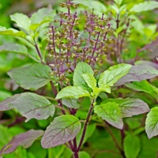

🌿 Natural Chemical Factory
Holy Basil · Sacred Basil · Indian Basil
Common names Holy Basil, Sacred Basil, Indian Basil
Botanical name Ocimum tenuiflorum
Family Lamiaceae (Mint family)
Native habitat Indian subcontinent & Southeast Asia

Scroll to explore ↓